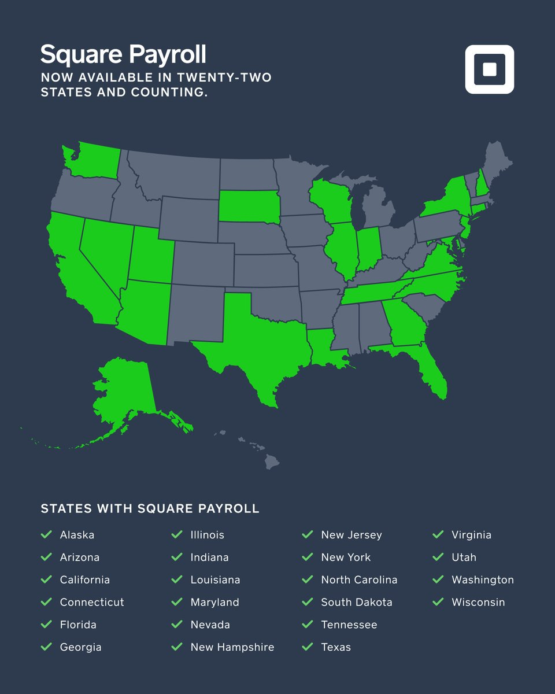
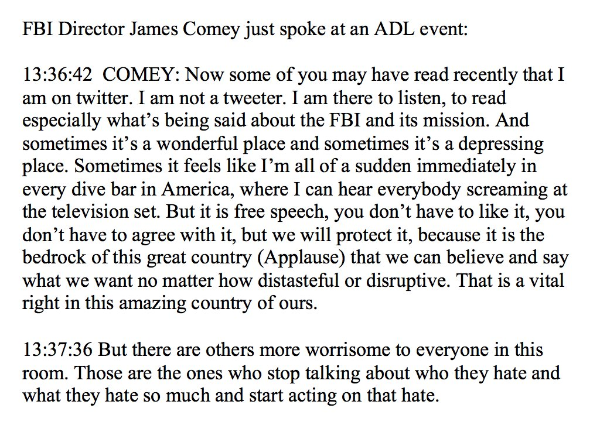
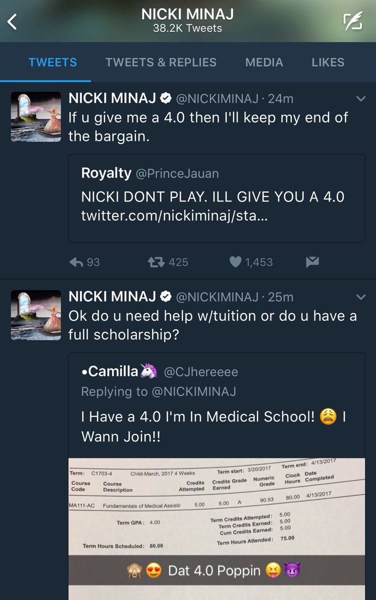
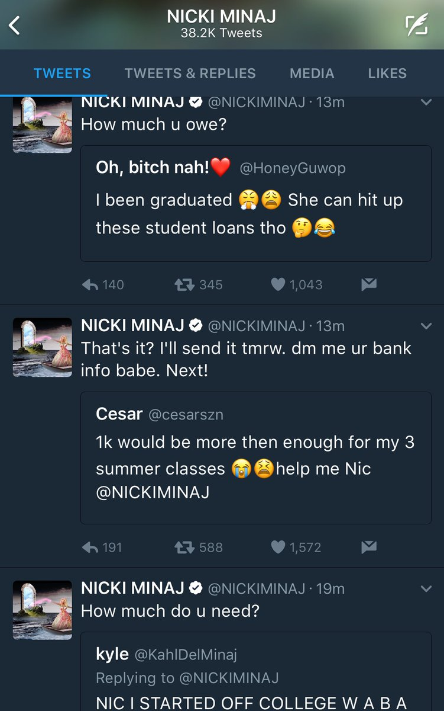

Susan Lee NethView profile

Tweets
- Tweets, current page.
- Tweets & replies
- Archived Tweets
- Media
You blocked @jack
Are you sure you want to view these Tweets? Viewing Tweets won't unblock @jack
-
jack Retweeted
This FBI Director has sought for years to jail me on account of my political activities. If I can oppose his firing, so can you.https://twitter.com/Snowden/status/862067649748119553 …
-
jack Retweeted
My Auntie Kim lost her battle with Breast Cancer early Sunday morning. She was a warrior and wanted me to share thishttps://m.youtube.com/watch?sns=em&v=H_37WTNdWdQ …
-
jack Retweeted
We do not currently support beanshttps://twitter.com/moeabdel/status/861996046007902208 …
-
jack Retweeted
Twitter CMO, Leslie Berland, chats wth
@Wendys marketers on how#NuggsForCarter became a cultural phenomenon "talk like a person"#MMAF2017pic.twitter.com/VGRFbNS4Rm -
Square Payroll now available in Indiana, Utah, and Washingtonhttps://twitter.com/square/status/861974312307372032 …
 Square Payroll launches in 3 more states, and is now available to 65% of U.S. businesses. http://squ.re/2qWikMb pic.twitter.com/I9wjBtcNmG
Square Payroll launches in 3 more states, and is now available to 65% of U.S. businesses. http://squ.re/2qWikMb pic.twitter.com/I9wjBtcNmG -
 “Sally Yates testified about Russia probe”https://twitter.com/i/moments/861667972745764869 …
“Sally Yates testified about Russia probe”https://twitter.com/i/moments/861667972745764869 … -
jack Retweeted
South Africa’s Fly Blue Crane is the first airline founded by a Black woman.pic.twitter.com/d2A7BYwZcM
-
jack Retweeted
LIVE with
@neiltyson and@McMurtrieSF, talking his new book (and more).https://www.pscp.tv/w/a9-cgTF6WUtiZ0xEWE9yamV8MVJEeGxaTU1acWxHTMfYGx0suBAvgD4gu1lCQ8ZpoI1aSD1a7LjeWDgmRcM0 … -
jack Retweeted
! Comey admits he's on Twitter, says sometimes Twitter is like being in a dive bar where you can hear everybody screaming at the TV True.pic.twitter.com/wkyUWmAPGw
 -
jack Retweeted
This little girl has so much conviction in her answers. This back and forth probably went on for days
 pic.twitter.com/BcA7xXko3U
pic.twitter.com/BcA7xXko3U -
-
jack Retweeted
The moment Emmanuel Macron's victory was announced to his supporters in Paris
#frenchelection#presidentielle2017 http://bbc.in/2pUfQku pic.twitter.com/QDIPYLwFc4French Election 2017BBC News -
jack Retweeted
-
jack Retweeted
Live video: French president-elect Macron speaking now after projected
#FrenchElection victoryhttps://twitter.com/i/live/846864146897354752 … -
-
"Where I fail, the responsibility is mine alone, but the rights I seek to defend are ones that can be shared."—
@aiwwhttps://mobile.nytimes.com/2017/05/06/opinion/sunday/ai-weiwei-how-censorship-works.html?referer=https://t.co/pJH1ymT9Vu … -
jack Retweeted
Uh, Nicki Minaj is offering to pay tuition for dozens of her followers on Twitter right now, as long as they have good grades.pic.twitter.com/dVdnGsGj8C
